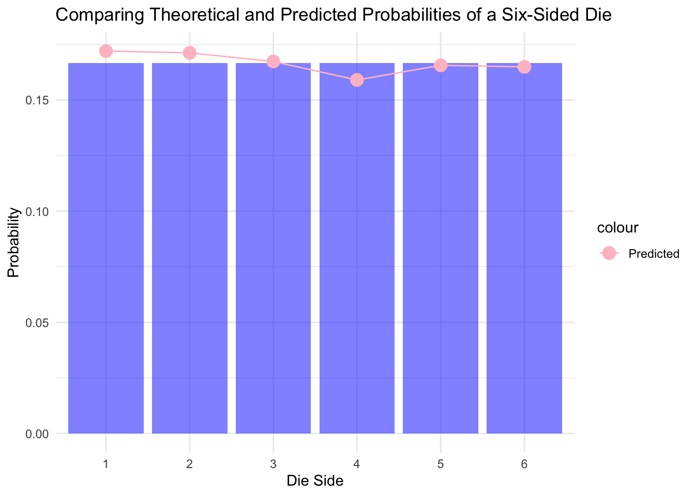

# Simulating Die Rolls
set.seed(123) # Set seed for reproducibility
rolls <- sample(1:6, 10000, replace = TRUE)
# Frequency Analysis
table(rolls)
# Machine Learning with Multinomial Logistic Regression
library(nnet)
rolls_factor <- as.factor(rolls)
model <- multinom(rolls_factor ~ 1, data = data.frame(rolls_factor))
# Analyzing the Model
summary(model)
probabilities <- predict(model, type = "probs")
mean_probabilities <- colMeans(probabilities)
visualization_data <- data.frame(
side = 1:6,
theoretical = rep(1/6, 6),
predicted = mean_probabilities
)
library(knitr)
# Assuming 'model' is your fitted model
coefs <- summary(model)$coefficients
std_errors <- summary(model)$standard.errors
# Combining coefficients and standard errors into one data frame
pretty_output <- data.frame(Coefficients = coefs[,1], Std_Errors = std_errors)
# Using kable to create a table
kable(pretty_output, caption = "Model Coefficients and Standard Errors")Probability Theory and Random Variables
Introduction to Probability Theory
Probability theory is the mathematical framework that allows us to analyze chance events in a rigorous way. It provides the foundations for statistics, which is used across data science to infer conclusions from data and for making predictions. At the core of probability theory is the concept of a random variable, which is a variable whose possible values are numerical outcomes of a random phenomenon.
Visualizing Probability Distributions
A fundamental part of probability theory is understanding probability distributions. A probability distribution describes how the values of a random variable are distributed. For example, the uniform distribution is one where all outcomes are equally likely, such as the roll of a fair die.
Let’s visualize the probability distribution of rolling a six-sided die.
The table below shows the coefficients from the multinomial logistic regression model, along with their standard errors. These coefficients represent the log odds of rolling each number on the die, with ‘1’ as the reference category.
- Initial Value: 17917.59
- Final Value: 17914.21
- Convergence: Yes
- Residual Deviance: 35828.42
- AIC: 35838.42
Here are some additional details about the model’s fit: - Initial Value: The initial log-likelihood value. - Final Value: The final log-likelihood value, indicating the model’s fit. - Convergence: Indicates that the model’s optimization process converged, suggesting a reliable fit. - Residual Deviance: Measures how well the model fits the data. - AIC: The Akaike Information Criterion, a measure of the model’s quality.

Alignment with Theoretical Values
A close alignment of the model’s predicted probabilities with the theoretical probabilities would indicate that our model has effectively ‘learned’ the underlying probability distribution of a fair die roll.
Deviation Analysis
Any significant deviation could point to potential biases in the simulation data or the model’s learning process. However, minor deviations are expected due to the inherent randomness in the data and the generalization capabilities of the model.
Model Evaluation
This comparison not only validates our model but also demonstrates the practical application of machine learning in understanding and analyzing probability distributions. It serves as an example of how machine learning can be applied to relatively simple statistical problems, providing a foundation for tackling more complex analytical tasks.
Conclusion
In conclusion, the visualization effectively demonstrates the power of machine learning in replicating and analyzing fundamental statistical concepts, such as probability distributions. It underlines the importance of both theoretical understanding and practical machine learning approaches in the field of data science.
GitHub Integration
All the code and data used in this blog post are available on GitHub.